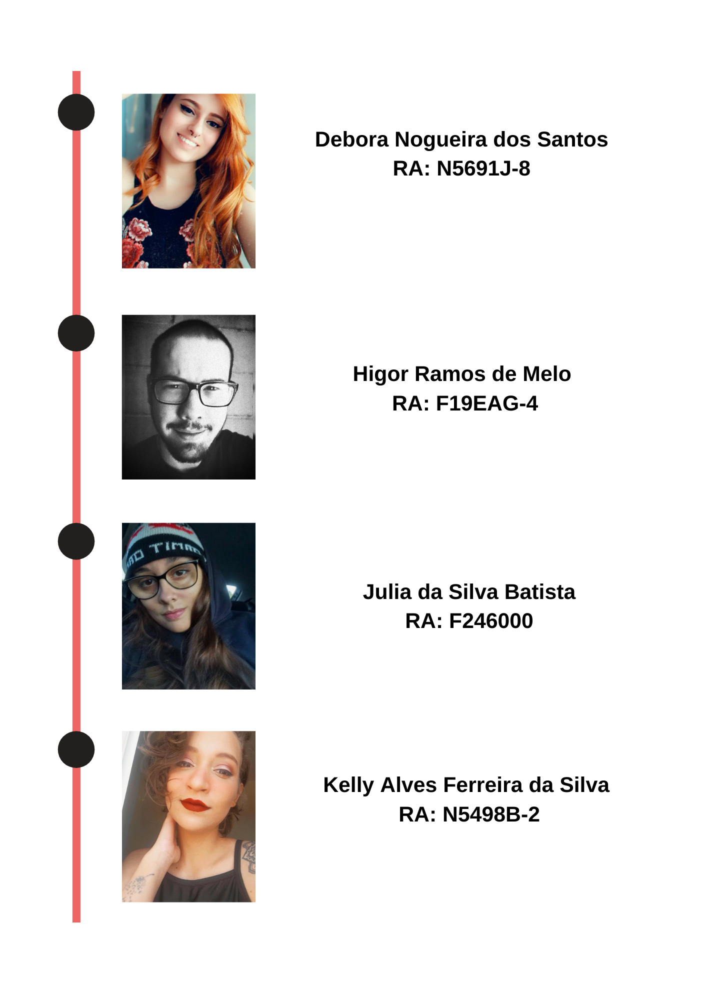
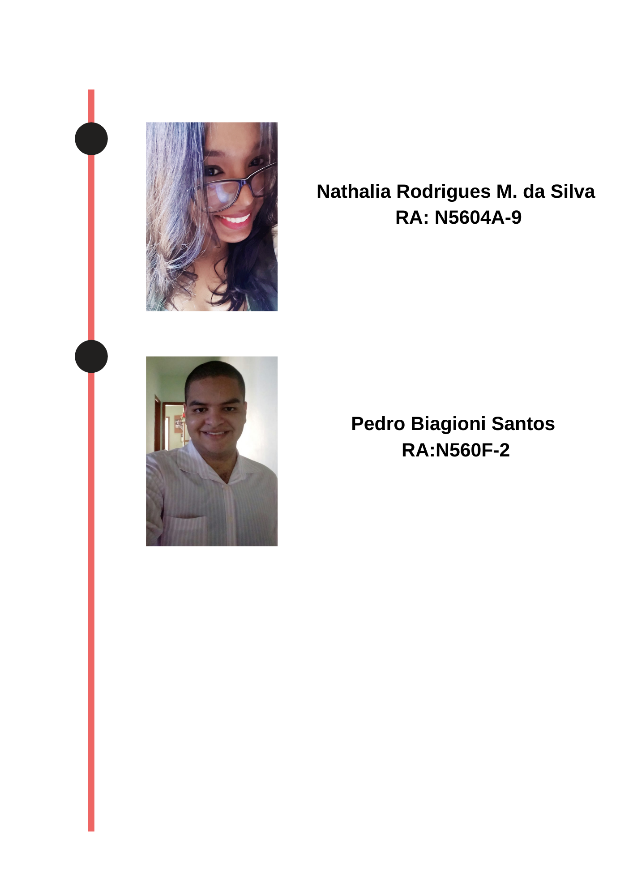

© 2021 PUZZLE MYSTERY. Todos os direitos reservados.
Escape se for capaz
PUZZLE (de quebra cabeças) nome com base no enigma presente nos jogos de raciocínio o qual apresentam teorias as quais apenas os jogadores podem provar na prática, decifrando a linha tênue entre os obstáculos e o objetivo do jogo. MYSTERY (de mistério) nome com base no mistério presente nos jogos, em seu desenvolvimento e barreiras para chegar a reta final. Os produtos elaborados e comercializados pela PUZZLE MYSTERY oferecem situações propícias para o exercício do raciocínio estratégico, do pensamento ágil e da competitividade inteligente e saudável. Em sua atuação como fábrica de jogos de tabuleiro, a PUZZLE MYSTERY atende aos interesses de públicos diversos incluindo escolas, empresas, institutos de cultura e lazer entre, outros.
 © 2021 PUZZLE MYSTERY. Todos os direitos reservados.